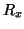
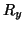
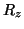

Next: turnback
Up: Dynamic Tip
Previous: During energy relaxation
Contents
where (

, 
, 
) is the step vector
(in Å) and  is the number of steps to be used to move the tip
along the step direction .
is the number of steps to be used to move the tip
along the step direction .
Lev Kantorovich
2005-08-04